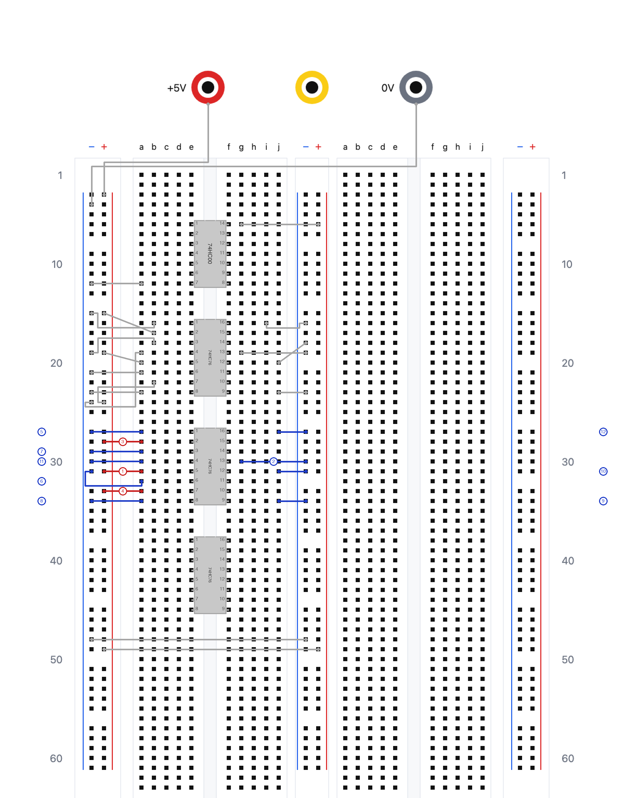
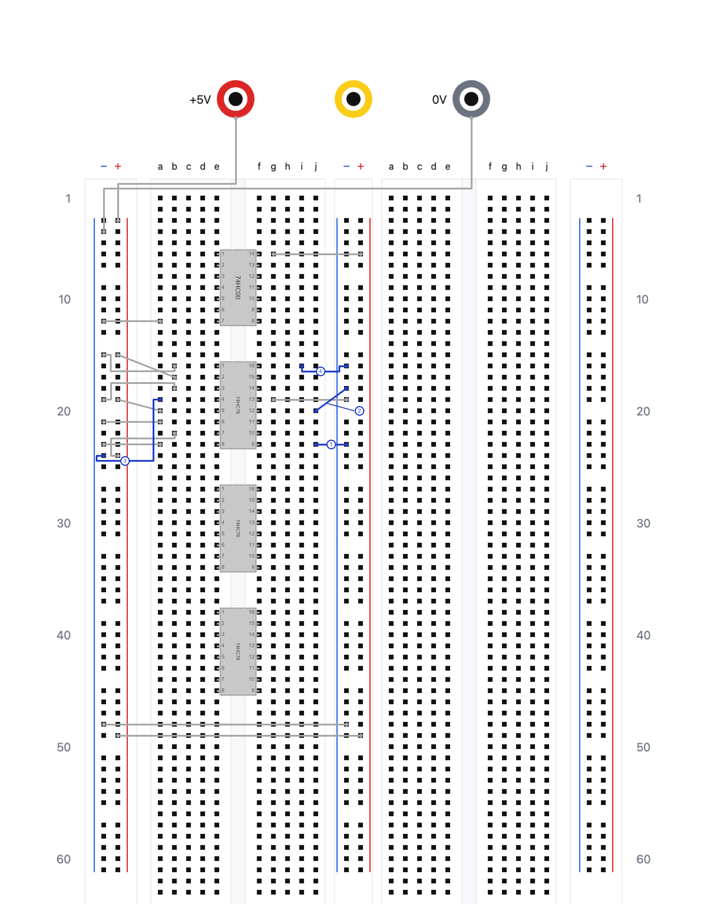
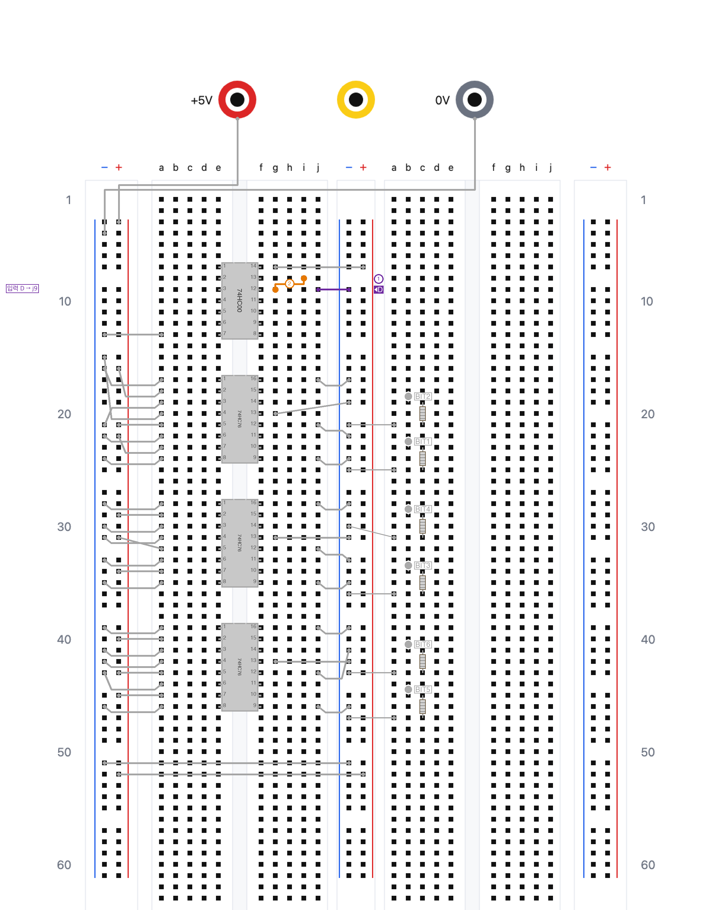
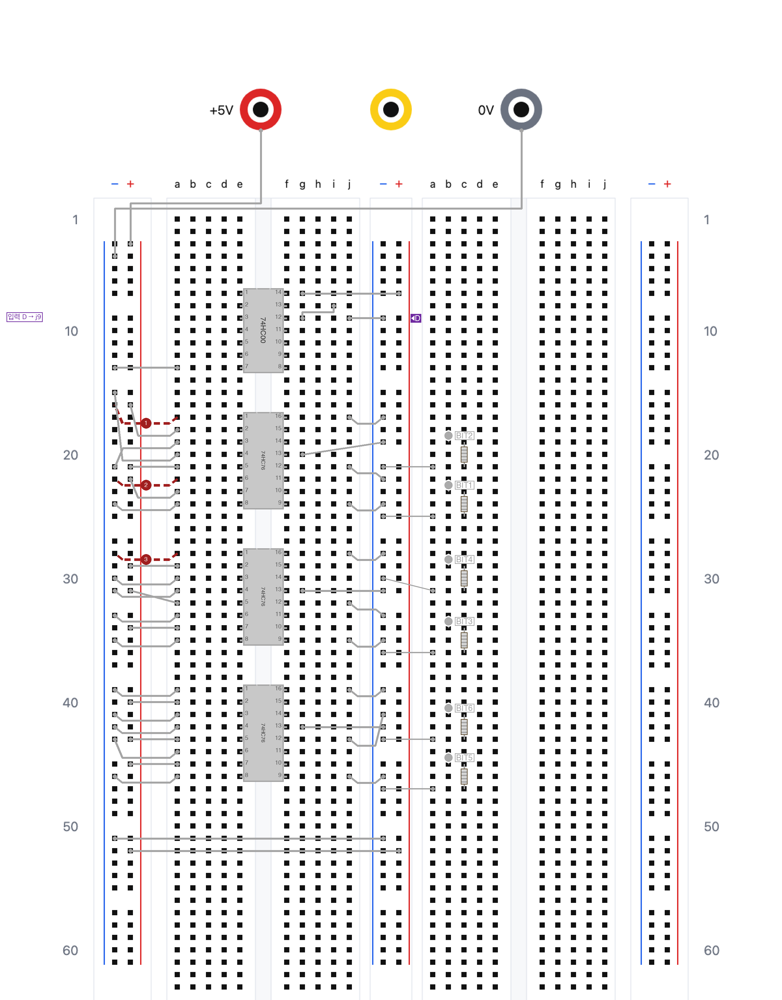
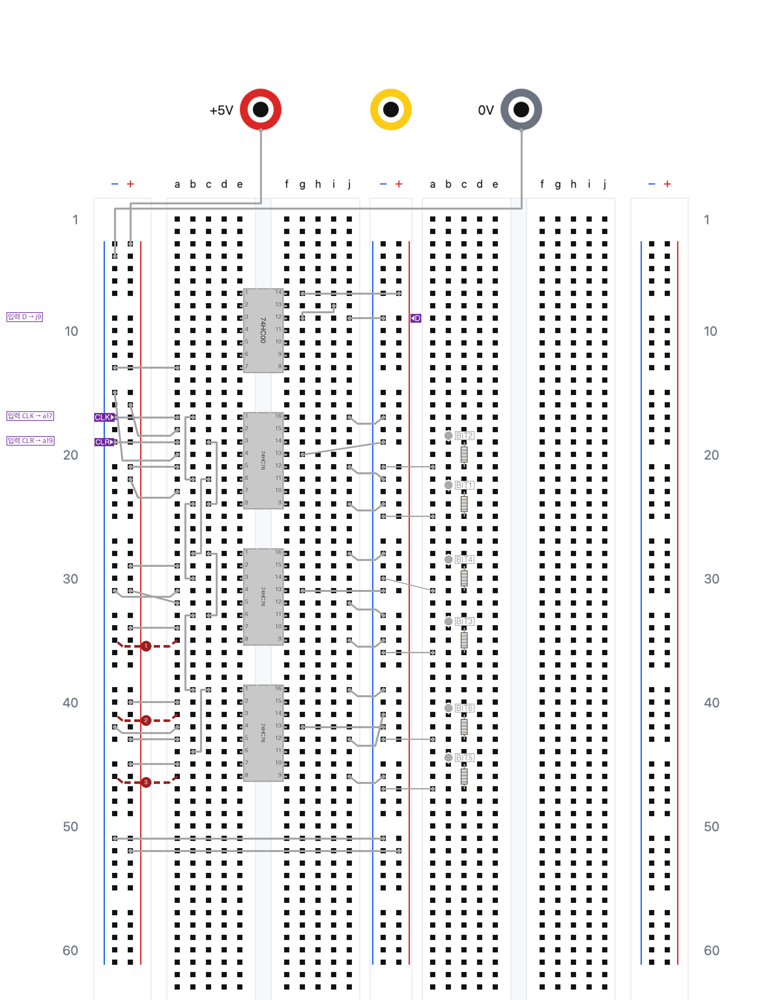
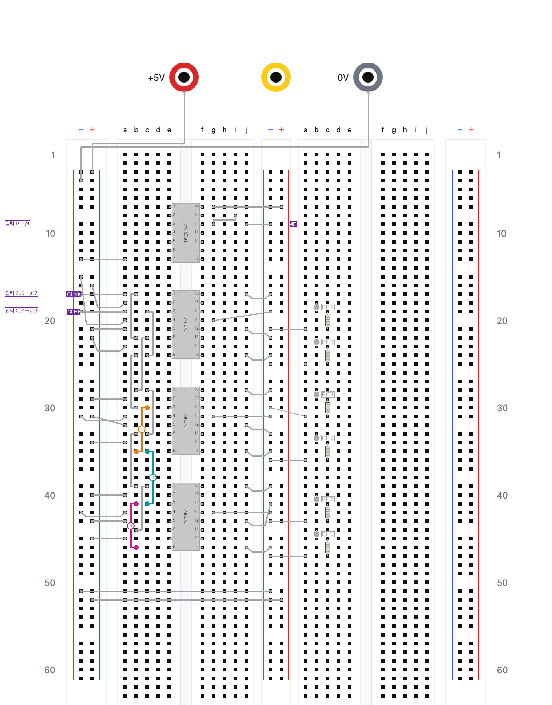
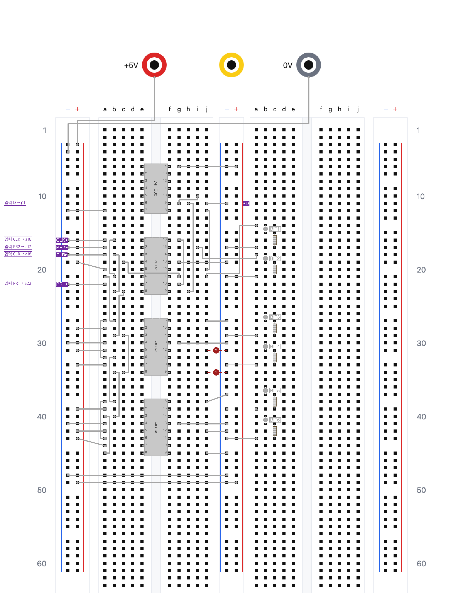
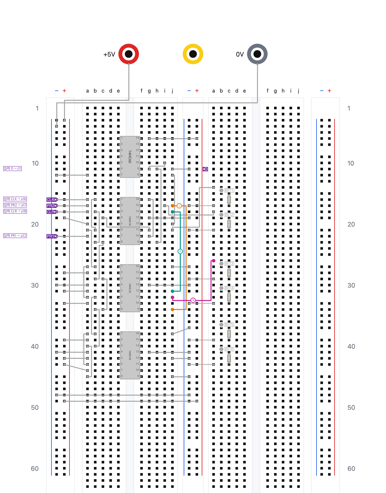
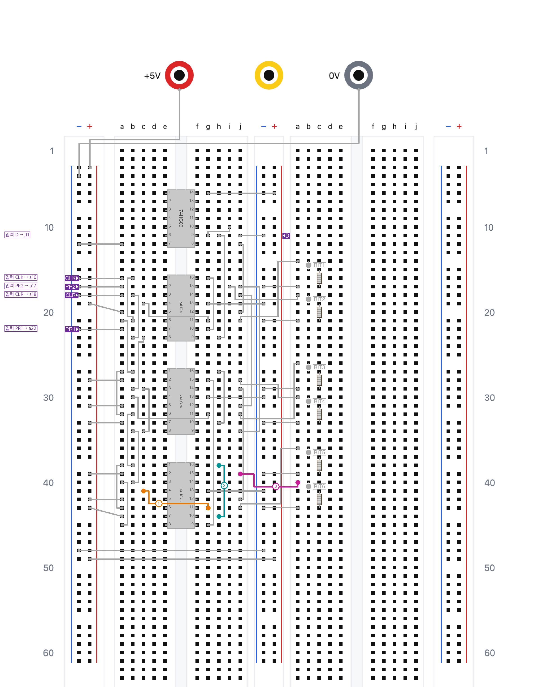
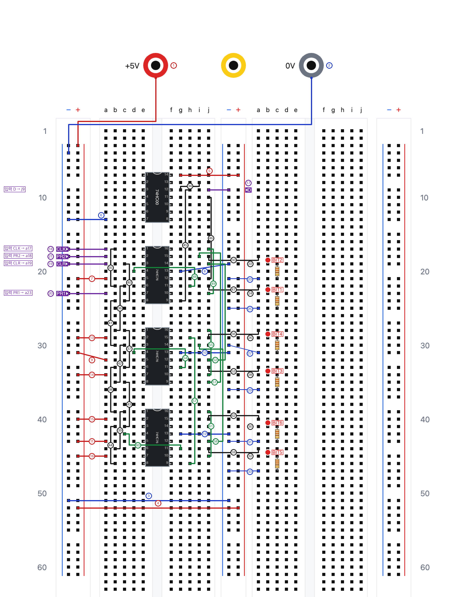

회로 1/1 · C1 · 실험 1) 6bit Shift Right Register · 기록: T1, T2, T3 · 판독: LED, oscilloscope

강의노트 p8 · 회로 구성
p8 회로의 논리 넷을 유지하고 패키지 안 두 F/F의 역할만 교환했다. 이 핀 재배정과 단계 절차는 교안 원문이 아니다. NAND는 12·13→11을 쓴다. D는 교안의 SERIAL DATA와 같은 입력이다. CLK·CLR은 여섯 단 공통이다. PR1은 BIT1(U2 둘째 F/F), PR2는 BIT2(U2 첫째 F/F)만 제어한다. 전원은 모든 HC76에서 5·13이며 HC00에서 14·7이다.
1단계에서 HC76의 미배선 J·K·CLK·CLR은 임시 GND선으로 0, PR1·PR2는 임시 +5V선으로 1에 고정한다. U3·U4 PR은 완성본에서도 +5V 고정이다. 임시 고정선은 미사용 핀이 아니며, 해당 입력을 연결하기 직전 걷기 그림에서 뽑는다. 이 운영 절차는 교안 원문이 아니다. 걷기·새 배선 중에는 전원을 끈다. 매번 켜기 전에 D=0·CLK=0·CLR=0·PR1=PR2=1을 맞춰 초기화한 뒤 해당 절차의 첫 행부터 수행한다. 아직 점퍼가 없는 입력은 임시 고정선이 그 값을 준다. 전원을 끈 상태에서 발생기 출력도 정지·분리해 입력을 통해 역급전하지 않는다.
1~6단계에서는 J·K가 아직 데이터 사슬에 연결되지 않았지만 0으로 고정돼 있다. Q 값은 확인하지 않고 해당 입력 넷만 오실로스코프/전압 프로브로 본다. 프로브 GND는 회로 GND에 연결한다(교안 원문이 아닌 부분 배선 확인 절차). 7단계부터 확인하는 BIT의 모든 J·K·CLK·CLR·PR은 확정된 넷에 연결된다. 각 단계마다 CLK을 정지하고 전원을 끈 뒤 다음 배선을 추가한다. CLK 입력 그림은 점퍼의 0 자리다. 자동 클럭을 쓸 때는 그 점퍼의 레일 쪽 끝을 검증한 0~+5V 발생기 출력으로 옮기고 발생기 GND를 회로 GND에 잇는다. 두 구동원을 함께 물리지 않는다.
보드 이름과 LED 번호
이 표는 교안 원문이 아닌 보드의 물리 순서다. 측정표 열 순서 BIT1~BIT6은 바꾸지 않는다.
| 보드 번호 | 태그 | 급전 핀 | 기록 열 |
|---|---|---|---|
| ① | BIT2 | U2 pin15 | BIT2 |
| ② | BIT1 | U2 pin11 | BIT1 |
| ③ | BIT4 | U3 pin15 | BIT4 |
| ④ | BIT3 | U3 pin11 | BIT3 |
| ⑤ | BIT6 | U4 pin15 | BIT6 |
| ⑥ | BIT5 | U4 pin11 | BIT5 |
단계 1 준비 ① · 보드·U1 전원 준비

이번 작업: U1~U4 칩 위치와 노치를 맞춰요. 전원 잭·레일 브리지·U1 전원을 연결해요.
- 1전원잭 → 좌 VCC레일3행전원장치 +5V 잭
- 2전원잭 → 좌 GND레일4행전원장치 0V 잭
- 3좌 GND레일51행 → 중앙GND레일51행레일 브리지
- 4좌 VCC레일52행 → 중앙VCC레일52행레일 브리지
- 5좌 g7 → 중앙VCC레일7행pin 14 -> +5V 레일
- 6좌 a13 → 좌 GND레일13행pin 7 -> GND 레일
완료 확인: 칩 네 개의 위치·노치와 U1 전원핀·레일 극성을 대조했나요?
단계 1 준비 ② · U2 입력 고정

이번 작업: U2 전원을 연결해요. CLK/CLR·PR·J/K 임시 고정선을 핀별로 꽂아요.
- 1좌 a21 → 좌 VCC레일21행pin 5 -> +5V 레일
- 2좌 g20 → 중앙GND레일19행pin 13 -> GND 레일
- 3좌 a17 → 좌 GND레일16행임시 U2 pin 1 -> GND · 2걷기에서 뽑아요
- 4좌 a22 → 좌 GND레일22행임시 U2 pin 6 -> GND · 2걷기에서 뽑아요
- 5좌 a19 → 좌 GND레일21행임시 U2 pin 3 -> GND · 4걷기에서 뽑아요
- 6좌 a24 → 좌 GND레일24행임시 U2 pin 8 -> GND · 4걷기에서 뽑아요
- 7좌 a23 → 좌 VCC레일22행임시 U2 pin 7 -> +5V · 6걷기에서 뽑아요
- 8좌 a18 → 좌 VCC레일16행임시 U2 pin 2 -> +5V · 6걷기에서 뽑아요
- 9좌 j24 → 중앙GND레일24행임시 U2 pin 9 -> GND · 7걷기에서 뽑아요
- 10좌 j21 → 중앙GND레일22행임시 U2 pin 12 -> GND · 7걷기에서 뽑아요
- 11좌 a20 → 좌 GND레일15행임시 U2 pin 4 -> GND · 8걷기에서 뽑아요
- 12좌 j17 → 중앙GND레일17행임시 U2 pin 16 -> GND · 8걷기에서 뽑아요
회색 = 앞 단계에서 그대로 둔 것 10개
완료 확인: ① 전원 pin5/13 ② CLK pin1/6·CLR pin3/8 ③ PR pin2/7 ④ J pin4/9·K pin12/16의 고정선을 대조했나요?
단계 1 준비 ③ · U3 입력 고정

이번 작업: U3 전원을 연결해요. CLK/CLR·고정 PR·J/K 임시 고정선을 핀별로 꽂아요.
- 1좌 a32 → 좌 VCC레일31행pin 5 -> +5V 레일
- 2좌 g31 → 중앙GND레일31행pin 13 -> GND 레일
- 3좌 a29 → 좌 VCC레일29행U3 pin 2 PR 비활성 -> +5V 레일
- 4좌 a34 → 좌 VCC레일34행U3 pin 7 PR 비활성 -> +5V 레일
- 5좌 a28 → 좌 GND레일28행임시 U3 pin 1 -> GND · 2걷기에서 뽑아요
- 6좌 a33 → 좌 GND레일33행임시 U3 pin 6 -> GND · 3걷기에서 뽑아요
- 7좌 a30 → 좌 GND레일30행임시 U3 pin 3 -> GND · 4걷기에서 뽑아요
- 8좌 a35 → 좌 GND레일35행임시 U3 pin 8 -> GND · 5걷기에서 뽑아요
- 9좌 j35 → 중앙GND레일35행임시 U3 pin 9 -> GND · 9걷기에서 뽑아요
- 10좌 j32 → 중앙GND레일33행임시 U3 pin 12 -> GND · 9걷기에서 뽑아요
- 11좌 a31 → 좌 GND레일31행임시 U3 pin 4 -> GND · 10걷기에서 뽑아요
- 12좌 j28 → 중앙GND레일28행임시 U3 pin 16 -> GND · 10걷기에서 뽑아요
회색 = 앞 단계에서 그대로 둔 것 22개
완료 확인: ① 전원 pin5/13 ② CLK pin1/6·CLR pin3/8 ③ PR pin2/7=+5V ④ J pin4/9·K pin12/16=GND를 대조했나요?
단계 1 준비 ④ · U4 입력 고정

이번 작업: U4 전원을 연결해요. CLK/CLR·고정 PR·J/K 임시 고정선을 핀별로 꽂아요.
- 1좌 a43 → 좌 VCC레일43행pin 5 -> +5V 레일
- 2좌 g42 → 중앙GND레일42행pin 13 -> GND 레일
- 3좌 a40 → 좌 VCC레일40행U4 pin 2 PR 비활성 -> +5V 레일
- 4좌 a45 → 좌 VCC레일45행U4 pin 7 PR 비활성 -> +5V 레일
- 5좌 a39 → 좌 GND레일39행임시 U4 pin 1 -> GND · 3걷기에서 뽑아요
- 6좌 a44 → 좌 GND레일43행임시 U4 pin 6 -> GND · 3걷기에서 뽑아요
- 7좌 a41 → 좌 GND레일41행임시 U4 pin 3 -> GND · 5걷기에서 뽑아요
- 8좌 a46 → 좌 GND레일46행임시 U4 pin 8 -> GND · 5걷기에서 뽑아요
- 9좌 j46 → 중앙GND레일46행임시 U4 pin 9 -> GND · 11걷기에서 뽑아요
- 10좌 j43 → 중앙GND레일41행임시 U4 pin 12 -> GND · 11걷기에서 뽑아요
- 11좌 a42 → 좌 GND레일42행임시 U4 pin 4 -> GND · 12걷기에서 뽑아요
- 12좌 j39 → 중앙GND레일39행임시 U4 pin 16 -> GND · 12걷기에서 뽑아요
회색 = 앞 단계에서 그대로 둔 것 34개
완료 확인: ① 전원 pin5/13 ② CLK pin1/6·CLR pin3/8 ③ PR pin2/7=+5V ④ J pin4/9·K pin12/16=GND를 대조했나요?
단계 1 준비 ⑤ · 위쪽 LED 준비

이번 작업: 위쪽 BIT2·BIT1·BIT4의 LED·330Ω·GND 사슬을 연결해요. 출력 급전은 기능 단계에서 연결해요.
- 1우 b18 → 우 c21BIT2: LED(우 b18→우 b19) + 330Ω(우 c19→우 c21) 직렬 · BIT2: 출력 1이면 켜짐 · 명세 기록 순서와 보드 번호가 다름
- 2우 a21 → 중앙GND레일21행BIT2 저항 아래 -> GND
- 3우 b22 → 우 c25BIT1: LED(우 b22→우 b23) + 330Ω(우 c23→우 c25) 직렬 · BIT1: 출력 1이면 켜짐 · 명세 기록 순서와 보드 번호가 다름
- 4우 a25 → 중앙GND레일25행BIT1 저항 아래 -> GND
- 5우 b28 → 우 c31BIT4: LED(우 b28→우 b29) + 330Ω(우 c29→우 c31) 직렬 · BIT4: 출력 1이면 켜짐 · 명세 기록 순서와 보드 번호가 다름
- 6우 a31 → 중앙GND레일30행BIT4 저항 아래 -> GND
회색 = 앞 단계에서 그대로 둔 것 46개
완료 확인: BIT2·BIT1·BIT4 순서와 LED 극성·330Ω·GND를 대조했나요? 출력 급전선 자리는 비어 있나요?
단계 1 준비 ⑥ · 아래쪽 LED 준비

이번 작업: 아래쪽 BIT3·BIT6·BIT5의 LED·330Ω·GND 사슬을 연결해요. 출력 급전은 기능 단계에서 연결해요.
- 1우 b33 → 우 c36BIT3: LED(우 b33→우 b34) + 330Ω(우 c34→우 c36) 직렬 · BIT3: 출력 1이면 켜짐 · 명세 기록 순서와 보드 번호가 다름
- 2우 a36 → 중앙GND레일36행BIT3 저항 아래 -> GND
- 3우 b40 → 우 c43BIT6: LED(우 b40→우 b41) + 330Ω(우 c41→우 c43) 직렬 · BIT6: 출력 1이면 켜짐 · 명세 기록 순서와 보드 번호가 다름
- 4우 a43 → 중앙GND레일43행BIT6 저항 아래 -> GND
- 5우 b44 → 우 c47BIT5: LED(우 b44→우 b45) + 330Ω(우 c45→우 c47) 직렬 · BIT5: 출력 1이면 켜짐 · 명세 기록 순서와 보드 번호가 다름
- 6우 a47 → 중앙GND레일47행BIT5 저항 아래 -> GND
회색 = 앞 단계에서 그대로 둔 것 52개
완료 확인: BIT3·BIT6·BIT5 순서와 LED 극성·330Ω·GND를 대조했나요? 출력 급전선 자리는 비어 있나요?
단계 1

이 단계에서: 준비 ⑥까지 마친 뒤 입력 D를 U1 pin12에 꽂아요. U1 pin12와 pin13을 묶어요. 전원 투입 전에 전체 전원·극성·임시 입력 고정을 대조해요.
- 1중앙GND레일9행 → 좌 j9입력 D -> U1 pin 12 · 1 이면 레일 쪽 끝을 +5V 레일로 옮겨요
- 2좌 g9 → 좌 i8D 두 입력 묶음: U1 pin 12 -> U1 pin 13
회색 = 앞 단계에서 그대로 둔 것 58개
확인 노드: D_BAR (U1 pin 11)
확인: 노드 D_BAR · 절차 V1 — 프로브로 해당 입력 넷만 확인해요. Q는 아직 보지 않아요.
V1 · 직렬 입력 반전 확인
준비·초기화: Q는 아직 보지 않는다. 프로브를 U1 pin11에 댄다.
출처: manual:p8
교안 원문이 아니다 — 교안에서 유도한 확인 절차
유도 이유: p8의 연결, p9의 초기화, p10의 하강 에지, p11의 PR 기능을 이 단계 확인 순서로 구체화했다. 교안 원문이 아니다.
실제 결과 — 맞으면 ✓, 다르면 실제 값을 적어요. 안 본 행은 비워 둬요.
| 순서 | 입력·조작 | 측정 핀·예상 논리값 | 실제 결과 |
|---|---|---|---|
| 1 | D=0 D = 0 |
D_BAR (U1 pin 11): 1 | |
| 2 | D=1 D = 1 |
D_BAR (U1 pin 11): 0 | |
| 3 | D를 0으로 복귀 D = 0 |
D_BAR (U1 pin 11): 1 |
2단계 전 · 걷기

이 단계에서: 전원을 끄고 걷기 ①·②·③을 뽑는다. 좌 a17 → 좌 GND레일16행; 좌 a22 → 좌 GND레일22행; 좌 a28 → 좌 GND레일28행 — 회색 선은 손대지 않는다. 새로 꽂는 것은 없다
먼저 뽑아요
- 1좌 a17 → 좌 GND레일16행 · 임시 U2 pin 1 -> GND · 2걷기에서 뽑아요
- 2좌 a22 → 좌 GND레일22행 · 임시 U2 pin 6 -> GND · 2걷기에서 뽑아요
- 3좌 a28 → 좌 GND레일28행 · 임시 U3 pin 1 -> GND · 2걷기에서 뽑아요
회색 = 앞 단계에서 그대로 둔 것 57개
확인: 뽑은 선이 손에 있고 좌 a17·좌 GND레일16행·좌 a22·좌 GND레일22행·좌 a28·좌 GND레일28행 홀이 비어 있다
단계 2

이 단계에서: 입력 CLK을 U2 pin1에 꽂는다. 신호선: CLK: U2 pin 1 -> U2 pin 6; CLK: U2 pin 6 -> U3 pin 1
- 1좌 GND레일17행 → 좌 a17입력 CLK -> U2 pin 1 · 1 이면 레일 쪽 끝을 +5V 레일로 옮겨요
- 2좌 b17 → 좌 b22CLK: U2 pin 1 -> U2 pin 6
- 3좌 c22 → 좌 b28CLK: U2 pin 6 -> U3 pin 1
회색 = 앞 단계에서 그대로 둔 것 57개
확인 노드: CLK_U3A (U3 pin 1)
확인: 노드 CLK_U3A · 절차 V2 — 프로브로 해당 입력 넷만 확인해요. Q는 아직 보지 않아요.
V2 · CLK 분배 확인
준비·초기화: Q는 아직 보지 않는다. 해당 노드 핀을 프로브로 확인하고 끝나면 입력을 0에 정지한다.
출처: manual:p8
교안 원문이 아니다 — 교안에서 유도한 확인 절차
유도 이유: p8의 연결, p9의 초기화, p10의 하강 에지, p11의 PR 기능을 이 단계 확인 순서로 구체화했다. 교안 원문이 아니다.
실제 결과 — 맞으면 ✓, 다르면 실제 값을 적어요. 안 본 행은 비워 둬요.
| 순서 | 입력·조작 | 측정 핀·예상 논리값 | 실제 결과 |
|---|---|---|---|
| 1 | CLK 0 CLK = 0 |
CLK_U3A (U3 pin 1): 0 | |
| 2 | CLK 0->1 CLK = 0->1 |
CLK_U3A (U3 pin 1): 1 | |
| 3 | CLK 1->0 CLK = 1->0 |
CLK_U3A (U3 pin 1): 0 |
3단계 전 · 걷기

이 단계에서: 전원을 끄고 걷기 ①·②·③을 뽑는다. 좌 a33 → 좌 GND레일33행; 좌 a39 → 좌 GND레일39행; 좌 a44 → 좌 GND레일43행 — 회색 선은 손대지 않는다. 새로 꽂는 것은 없다
먼저 뽑아요
- 1좌 a33 → 좌 GND레일33행 · 임시 U3 pin 6 -> GND · 3걷기에서 뽑아요
- 2좌 a39 → 좌 GND레일39행 · 임시 U4 pin 1 -> GND · 3걷기에서 뽑아요
- 3좌 a44 → 좌 GND레일43행 · 임시 U4 pin 6 -> GND · 3걷기에서 뽑아요
회색 = 앞 단계에서 그대로 둔 것 57개
확인: 뽑은 선이 손에 있고 좌 a33·좌 GND레일33행·좌 a39·좌 GND레일39행·좌 a44·좌 GND레일43행 홀이 비어 있다
단계 3

이 단계에서: 신호선: CLK: U3 pin 1 -> U3 pin 6; CLK: U3 pin 6 -> U4 pin 1; CLK: U4 pin 1 -> U4 pin 6
- 1좌 c28 → 좌 c33CLK: U3 pin 1 -> U3 pin 6
- 2좌 b33 → 좌 b39CLK: U3 pin 6 -> U4 pin 1
- 3좌 c39 → 좌 b44CLK: U4 pin 1 -> U4 pin 6
회색 = 앞 단계에서 그대로 둔 것 57개
확인 노드: CLK_U4B (U4 pin 6)
확인: 노드 CLK_U4B · 절차 V3 — 프로브로 해당 입력 넷만 확인해요. Q는 아직 보지 않아요.
V3 · CLK 분배 확인
준비·초기화: Q는 아직 보지 않는다. 해당 노드 핀을 프로브로 확인하고 끝나면 입력을 0에 정지한다.
출처: manual:p8
교안 원문이 아니다 — 교안에서 유도한 확인 절차
유도 이유: p8의 연결, p9의 초기화, p10의 하강 에지, p11의 PR 기능을 이 단계 확인 순서로 구체화했다. 교안 원문이 아니다.
실제 결과 — 맞으면 ✓, 다르면 실제 값을 적어요. 안 본 행은 비워 둬요.
| 순서 | 입력·조작 | 측정 핀·예상 논리값 | 실제 결과 |
|---|---|---|---|
| 1 | CLK 0 CLK = 0 |
CLK_U4B (U4 pin 6): 0 | |
| 2 | CLK 0->1 CLK = 0->1 |
CLK_U4B (U4 pin 6): 1 | |
| 3 | CLK 1->0 CLK = 1->0 |
CLK_U4B (U4 pin 6): 0 |
4단계 전 · 걷기

이 단계에서: 전원을 끄고 걷기 ①·②·③을 뽑는다. 좌 a19 → 좌 GND레일21행; 좌 a24 → 좌 GND레일24행; 좌 a30 → 좌 GND레일30행 — 회색 선은 손대지 않는다. 새로 꽂는 것은 없다
먼저 뽑아요
- 1좌 a19 → 좌 GND레일21행 · 임시 U2 pin 3 -> GND · 4걷기에서 뽑아요
- 2좌 a24 → 좌 GND레일24행 · 임시 U2 pin 8 -> GND · 4걷기에서 뽑아요
- 3좌 a30 → 좌 GND레일30행 · 임시 U3 pin 3 -> GND · 4걷기에서 뽑아요
회색 = 앞 단계에서 그대로 둔 것 57개
확인: 뽑은 선이 손에 있고 좌 a19·좌 GND레일21행·좌 a24·좌 GND레일24행·좌 a30·좌 GND레일30행 홀이 비어 있다
단계 4

이 단계에서: 입력 CLR을 U2 pin3에 꽂는다. 신호선: CLR: U2 pin 3 -> U2 pin 8; CLR: U2 pin 8 -> U3 pin 3
- 1좌 GND레일19행 → 좌 a19입력 CLR -> U2 pin 3 · 1 이면 레일 쪽 끝을 +5V 레일로 옮겨요
- 2좌 c19 → 좌 c24CLR: U2 pin 3 -> U2 pin 8
- 3좌 b24 → 좌 b30CLR: U2 pin 8 -> U3 pin 3
회색 = 앞 단계에서 그대로 둔 것 57개
확인 노드: CLR_U3A (U3 pin 3)
확인: 노드 CLR_U3A · 절차 V4 — 프로브로 해당 입력 넷만 확인해요. Q는 아직 보지 않아요.
V4 · CLR 분배 확인
준비·초기화: Q는 아직 보지 않는다. 해당 노드 핀을 프로브로 확인하고 끝나면 입력을 0에 정지한다.
출처: manual:p8
교안 원문이 아니다 — 교안에서 유도한 확인 절차
유도 이유: p8의 연결, p9의 초기화, p10의 하강 에지, p11의 PR 기능을 이 단계 확인 순서로 구체화했다. 교안 원문이 아니다.
실제 결과 — 맞으면 ✓, 다르면 실제 값을 적어요. 안 본 행은 비워 둬요.
| 순서 | 입력·조작 | 측정 핀·예상 논리값 | 실제 결과 |
|---|---|---|---|
| 1 | CLR 0 CLR = 0 |
CLR_U3A (U3 pin 3): 0 | |
| 2 | CLR 1 CLR = 1 |
CLR_U3A (U3 pin 3): 1 | |
| 3 | CLR 0 CLR = 0 |
CLR_U3A (U3 pin 3): 0 |
5단계 전 · 걷기

이 단계에서: 전원을 끄고 걷기 ①·②·③을 뽑는다. 좌 a35 → 좌 GND레일35행; 좌 a41 → 좌 GND레일41행; 좌 a46 → 좌 GND레일46행 — 회색 선은 손대지 않는다. 새로 꽂는 것은 없다
먼저 뽑아요
- 1좌 a35 → 좌 GND레일35행 · 임시 U3 pin 8 -> GND · 5걷기에서 뽑아요
- 2좌 a41 → 좌 GND레일41행 · 임시 U4 pin 3 -> GND · 5걷기에서 뽑아요
- 3좌 a46 → 좌 GND레일46행 · 임시 U4 pin 8 -> GND · 5걷기에서 뽑아요
회색 = 앞 단계에서 그대로 둔 것 57개
확인: 뽑은 선이 손에 있고 좌 a35·좌 GND레일35행·좌 a41·좌 GND레일41행·좌 a46·좌 GND레일46행 홀이 비어 있다
단계 5

이 단계에서: 신호선: CLR: U3 pin 3 -> U3 pin 8; CLR: U3 pin 8 -> U4 pin 3; CLR: U4 pin 3 -> U4 pin 8
- 1좌 c30 → 좌 b35CLR: U3 pin 3 -> U3 pin 8
- 2좌 c35 → 좌 c41CLR: U3 pin 8 -> U4 pin 3
- 3좌 b41 → 좌 b46CLR: U4 pin 3 -> U4 pin 8
회색 = 앞 단계에서 그대로 둔 것 57개
확인 노드: CLR_U4B (U4 pin 8)
확인: 노드 CLR_U4B · 절차 V5 — 프로브로 해당 입력 넷만 확인해요. Q는 아직 보지 않아요.
V5 · CLR 분배 확인
준비·초기화: Q는 아직 보지 않는다. 해당 노드 핀을 프로브로 확인하고 끝나면 입력을 0에 정지한다.
출처: manual:p8
교안 원문이 아니다 — 교안에서 유도한 확인 절차
유도 이유: p8의 연결, p9의 초기화, p10의 하강 에지, p11의 PR 기능을 이 단계 확인 순서로 구체화했다. 교안 원문이 아니다.
실제 결과 — 맞으면 ✓, 다르면 실제 값을 적어요. 안 본 행은 비워 둬요.
| 순서 | 입력·조작 | 측정 핀·예상 논리값 | 실제 결과 |
|---|---|---|---|
| 1 | CLR 0 CLR = 0 |
CLR_U4B (U4 pin 8): 0 | |
| 2 | CLR 1 CLR = 1 |
CLR_U4B (U4 pin 8): 1 | |
| 3 | CLR 0 CLR = 0 |
CLR_U4B (U4 pin 8): 0 |
6단계 전 · 걷기
이 단계에서: 전원을 끄고 걷기 ①·②을 뽑는다. 좌 a23 → 좌 VCC레일22행; 좌 a18 → 좌 VCC레일16행 — 회색 선은 손대지 않는다. 새로 꽂는 것은 없다
먼저 뽑아요
- 1좌 a23 → 좌 VCC레일22행 · 임시 U2 pin 7 -> +5V · 6걷기에서 뽑아요
- 2좌 a18 → 좌 VCC레일16행 · 임시 U2 pin 2 -> +5V · 6걷기에서 뽑아요
회색 = 앞 단계에서 그대로 둔 것 58개
확인: 뽑은 선이 손에 있고 좌 a23·좌 VCC레일22행·좌 a18·좌 VCC레일16행 홀이 비어 있다
단계 6

이 단계에서: 입력 PR1을 U2 pin7, PR2를 U2 pin2에 꽂는다.
- 1좌 GND레일23행 → 좌 a23입력 PR1 -> U2 pin 7 · 1 이면 레일 쪽 끝을 +5V 레일로 옮겨요
- 2좌 GND레일18행 → 좌 a18입력 PR2 -> U2 pin 2 · 1 이면 레일 쪽 끝을 +5V 레일로 옮겨요
회색 = 앞 단계에서 그대로 둔 것 58개
확인 노드: PR1_PIN (U2 pin 7)
확인: 노드 PR1_PIN · 절차 V6 — 프로브로 해당 입력 넷만 확인해요. Q는 아직 보지 않아요.
V6 · 독립 프리셋 핀 확인
준비·초기화: CLK=0, CLR=1로 정지한다. Q는 아직 보지 않는다. PR1·PR2 핀 레벨을 프로브로 확인한다.
출처: manual:p11
교안 원문이 아니다 — 교안에서 유도한 확인 절차
유도 이유: p8의 연결, p9의 초기화, p10의 하강 에지, p11의 PR 기능을 이 단계 확인 순서로 구체화했다. 교안 원문이 아니다.
실제 결과 — 맞으면 ✓, 다르면 실제 값을 적어요. 안 본 행은 비워 둬요.
| 순서 | 입력·조작 | 측정 핀·예상 논리값 | 실제 결과 |
|---|---|---|---|
| 1 | 둘 다 비활성 PR1 = 1 PR2 = 1 |
PR1_PIN (U2 pin 7): 1 PR2_PIN (U2 pin 2): 1 |
|
| 2 | PR1만 활성 PR1 = 0 PR2 = 1 |
PR1_PIN (U2 pin 7): 0 PR2_PIN (U2 pin 2): 1 |
|
| 3 | PR1 복귀 PR1 = 1 PR2 = 1 |
PR1_PIN (U2 pin 7): 1 PR2_PIN (U2 pin 2): 1 |
|
| 4 | PR2만 활성 PR1 = 1 PR2 = 0 |
PR1_PIN (U2 pin 7): 1 PR2_PIN (U2 pin 2): 0 |
|
| 5 | PR2 복귀 PR1 = 1 PR2 = 1 |
PR1_PIN (U2 pin 7): 1 PR2_PIN (U2 pin 2): 1 |
7단계 전 · 걷기
이 단계에서: 전원을 끄고 걷기 ①·②을 뽑는다. 좌 j24 → 중앙GND레일24행; 좌 j21 → 중앙GND레일22행 — 회색 선은 손대지 않는다. 새로 꽂는 것은 없다
먼저 뽑아요
- 1좌 j24 → 중앙GND레일24행 · 임시 U2 pin 9 -> GND · 7걷기에서 뽑아요
- 2좌 j21 → 중앙GND레일22행 · 임시 U2 pin 12 -> GND · 7걷기에서 뽑아요
회색 = 앞 단계에서 그대로 둔 것 58개
확인: 뽑은 선이 손에 있고 좌 j24·중앙GND레일24행·좌 j21·중앙GND레일22행 홀이 비어 있다
단계 7
이 단계에서: 신호선: D: U1 pin 12 -> U2 pin 9 (BIT1 J); D' (U1 pin 11) -> U2 pin 12 (BIT1 K); U2 pin 11→LED BIT1 급전
- 1좌 h9 → 좌 g24D: U1 pin 12 -> U2 pin 9 (BIT1 J)
- 2좌 j10 → 좌 j21D' (U1 pin 11) -> U2 pin 12 (BIT1 K)
- 3좌 j22 → 우 a22BIT1 = U2 pin 11 -> LED BIT1
회색 = 앞 단계에서 그대로 둔 것 58개
확인 노드: BIT1 (U2 pin 11)
확인: 노드 BIT1 · 절차 V7 — LED BIT1와 앞서 연결한 LED를 확인해요. 첫 행에서 다시 초기화해요.
V7 · BIT1~BIT1 초기화·시프트 확인
준비·초기화: CLK을 0에 정지하고 PR1=PR2=1로 둔다. BIT1까지 배선한 뒤 첫 행부터 실행한다. 뒤의 미배선 BIT는 관측하지 않는다.
출처: manual:p10
교안 원문이 아니다 — 교안에서 유도한 확인 절차
유도 이유: p8의 연결, p9의 초기화, p10의 하강 에지, p11의 PR 기능을 이 단계 확인 순서로 구체화했다. 교안 원문이 아니다.
보는 LED: ②BIT1 = BIT1
실제 결과 — 맞으면 ✓, 다르면 실제 값을 적어요. 안 본 행은 비워 둬요.
| 순서 | 입력·조작 | 예상 켜지는 LED | 예상 꺼지는 LED | 실제 결과 |
|---|---|---|---|---|
| 1 | 공통 초기화 D = 0 CLK = 0 CLR = 0 PR1 = 1 PR2 = 1 |
없음 | ②BIT1 | |
| 2 | CLR 해제 D = 0 CLK = 0 CLR = 1 PR1 = 1 PR2 = 1 |
없음 | ②BIT1 | |
| 3 | D=1 준비 D = 1 CLK = 0 CLR = 1 PR1 = 1 PR2 = 1 |
없음 | ②BIT1 | |
| 4 | 클럭 상승 1 D = 1 CLK = 0->1 CLR = 1 PR1 = 1 PR2 = 1 |
없음 | ②BIT1 | |
| 5 | 클럭 하강 1 D = 1 CLK = 1->0 CLR = 1 PR1 = 1 PR2 = 1 |
②BIT1 | 없음 | |
| 6 | 재초기화 D = 0 CLK = 0 CLR = 0 PR1 = 1 PR2 = 1 |
없음 | ②BIT1 | |
| 7 | CLR 해제 D = 0 CLK = 0 CLR = 1 PR1 = 1 PR2 = 1 |
없음 | ②BIT1 | |
| 8 | PR1 강제 SET D = 0 CLK = 0 CLR = 1 PR1 = 0 PR2 = 1 |
②BIT1 | 없음 | |
| 9 | PR1 해제 D = 0 CLK = 0 CLR = 1 PR1 = 1 PR2 = 1 |
②BIT1 | 없음 |
8단계 전 · 걷기

이 단계에서: 전원을 끄고 걷기 ①·②을 뽑는다. 좌 a20 → 좌 GND레일15행; 좌 j17 → 중앙GND레일17행 — 회색 선은 손대지 않는다. 새로 꽂는 것은 없다
먼저 뽑아요
- 1좌 a20 → 좌 GND레일15행 · 임시 U2 pin 4 -> GND · 8걷기에서 뽑아요
- 2좌 j17 → 중앙GND레일17행 · 임시 U2 pin 16 -> GND · 8걷기에서 뽑아요
회색 = 앞 단계에서 그대로 둔 것 59개
확인: 뽑은 선이 손에 있고 좌 a20·좌 GND레일15행·좌 j17·중앙GND레일17행 홀이 비어 있다
단계 8

이 단계에서: 신호선: BIT1: U2 pin 11 -> U2 pin 4 (BIT2 J); BIT1 보수: U2 pin 10 -> U2 pin 16 (BIT2 K); U2 pin 15→LED BIT2 급전
- 1좌 h22 → 좌 d20BIT1: U2 pin 11 -> U2 pin 4 (BIT2 J)
- 2좌 j23 → 좌 j17BIT1 보수: U2 pin 10 -> U2 pin 16 (BIT2 K)
- 3좌 j18 → 우 a18BIT2 = U2 pin 15 -> LED BIT2
회색 = 앞 단계에서 그대로 둔 것 59개
확인 노드: BIT2 (U2 pin 15)
확인: 노드 BIT2 · 절차 V8 — LED BIT2와 앞서 연결한 LED를 확인해요. 첫 행에서 다시 초기화해요.
V8 · BIT1~BIT2 초기화·시프트 확인
준비·초기화: CLK을 0에 정지하고 PR1=PR2=1로 둔다. BIT2까지 배선한 뒤 첫 행부터 실행한다. 뒤의 미배선 BIT는 관측하지 않는다.
출처: manual:p10
교안 원문이 아니다 — 교안에서 유도한 확인 절차
유도 이유: p8의 연결, p9의 초기화, p10의 하강 에지, p11의 PR 기능을 이 단계 확인 순서로 구체화했다. 교안 원문이 아니다.
보는 LED: ①BIT2 = BIT2 · ②BIT1 = BIT1
실제 결과 — 맞으면 ✓, 다르면 실제 값을 적어요. 안 본 행은 비워 둬요.
| 순서 | 입력·조작 | 예상 켜지는 LED | 예상 꺼지는 LED | 실제 결과 |
|---|---|---|---|---|
| 1 | 공통 초기화 D = 0 CLK = 0 CLR = 0 PR1 = 1 PR2 = 1 |
없음 | ①BIT2 · ②BIT1 | |
| 2 | CLR 해제 D = 0 CLK = 0 CLR = 1 PR1 = 1 PR2 = 1 |
없음 | ①BIT2 · ②BIT1 | |
| 3 | D=1 준비 D = 1 CLK = 0 CLR = 1 PR1 = 1 PR2 = 1 |
없음 | ①BIT2 · ②BIT1 | |
| 4 | 클럭 상승 1 D = 1 CLK = 0->1 CLR = 1 PR1 = 1 PR2 = 1 |
없음 | ①BIT2 · ②BIT1 | |
| 5 | 클럭 하강 1 D = 1 CLK = 1->0 CLR = 1 PR1 = 1 PR2 = 1 |
②BIT1 | ①BIT2 | |
| 6 | D=0 준비 D = 0 CLK = 0 CLR = 1 PR1 = 1 PR2 = 1 |
②BIT1 | ①BIT2 | |
| 7 | 클럭 상승 2 D = 0 CLK = 0->1 CLR = 1 PR1 = 1 PR2 = 1 |
②BIT1 | ①BIT2 | |
| 8 | 클럭 하강 2 D = 0 CLK = 1->0 CLR = 1 PR1 = 1 PR2 = 1 |
①BIT2 | ②BIT1 | |
| 9 | 재초기화 D = 0 CLK = 0 CLR = 0 PR1 = 1 PR2 = 1 |
없음 | ①BIT2 · ②BIT1 | |
| 10 | CLR 해제 D = 0 CLK = 0 CLR = 1 PR1 = 1 PR2 = 1 |
없음 | ①BIT2 · ②BIT1 | |
| 11 | PR2 강제 SET D = 0 CLK = 0 CLR = 1 PR1 = 1 PR2 = 0 |
①BIT2 | ②BIT1 | |
| 12 | PR2 해제 D = 0 CLK = 0 CLR = 1 PR1 = 1 PR2 = 1 |
①BIT2 | ②BIT1 |
9단계 전 · 걷기

이 단계에서: 전원을 끄고 걷기 ①·②을 뽑는다. 좌 j35 → 중앙GND레일35행; 좌 j32 → 중앙GND레일33행 — 회색 선은 손대지 않는다. 새로 꽂는 것은 없다
먼저 뽑아요
- 1좌 j35 → 중앙GND레일35행 · 임시 U3 pin 9 -> GND · 9걷기에서 뽑아요
- 2좌 j32 → 중앙GND레일33행 · 임시 U3 pin 12 -> GND · 9걷기에서 뽑아요
회색 = 앞 단계에서 그대로 둔 것 60개
확인: 뽑은 선이 손에 있고 좌 j35·중앙GND레일35행·좌 j32·중앙GND레일33행 홀이 비어 있다
단계 9

이 단계에서: 신호선: BIT2: U2 pin 15 -> U3 pin 9 (BIT3 J); BIT2 보수: U2 pin 14 -> U3 pin 12 (BIT3 K); U3 pin 11→LED BIT3 급전
- 1좌 i18 → 좌 j35BIT2: U2 pin 15 -> U3 pin 9 (BIT3 J)
- 2좌 j19 → 좌 j32BIT2 보수: U2 pin 14 -> U3 pin 12 (BIT3 K)
- 3좌 j33 → 우 a33BIT3 = U3 pin 11 -> LED BIT3
회색 = 앞 단계에서 그대로 둔 것 60개
확인 노드: BIT3 (U3 pin 11)
확인: 노드 BIT3 · 절차 V9 — LED BIT3와 앞서 연결한 LED를 확인해요. 첫 행에서 다시 초기화해요.
V9 · BIT1~BIT3 초기화·시프트 확인
준비·초기화: CLK을 0에 정지하고 PR1=PR2=1로 둔다. BIT3까지 배선한 뒤 첫 행부터 실행한다. 뒤의 미배선 BIT는 관측하지 않는다.
출처: manual:p10
교안 원문이 아니다 — 교안에서 유도한 확인 절차
유도 이유: p8의 연결, p9의 초기화, p10의 하강 에지, p11의 PR 기능을 이 단계 확인 순서로 구체화했다. 교안 원문이 아니다.
보는 LED: ①BIT2 = BIT2 · ②BIT1 = BIT1 · ④BIT3 = BIT3
실제 결과 — 맞으면 ✓, 다르면 실제 값을 적어요. 안 본 행은 비워 둬요.
| 순서 | 입력·조작 | 예상 켜지는 LED | 예상 꺼지는 LED | 실제 결과 |
|---|---|---|---|---|
| 1 | 공통 초기화 D = 0 CLK = 0 CLR = 0 PR1 = 1 PR2 = 1 |
없음 | ①BIT2 · ②BIT1 · ④BIT3 | |
| 2 | CLR 해제 D = 0 CLK = 0 CLR = 1 PR1 = 1 PR2 = 1 |
없음 | ①BIT2 · ②BIT1 · ④BIT3 | |
| 3 | D=1 준비 D = 1 CLK = 0 CLR = 1 PR1 = 1 PR2 = 1 |
없음 | ①BIT2 · ②BIT1 · ④BIT3 | |
| 4 | 클럭 상승 1 D = 1 CLK = 0->1 CLR = 1 PR1 = 1 PR2 = 1 |
없음 | ①BIT2 · ②BIT1 · ④BIT3 | |
| 5 | 클럭 하강 1 D = 1 CLK = 1->0 CLR = 1 PR1 = 1 PR2 = 1 |
②BIT1 | ①BIT2 · ④BIT3 | |
| 6 | D=0 준비 D = 0 CLK = 0 CLR = 1 PR1 = 1 PR2 = 1 |
②BIT1 | ①BIT2 · ④BIT3 | |
| 7 | 클럭 상승 2 D = 0 CLK = 0->1 CLR = 1 PR1 = 1 PR2 = 1 |
②BIT1 | ①BIT2 · ④BIT3 | |
| 8 | 클럭 하강 2 D = 0 CLK = 1->0 CLR = 1 PR1 = 1 PR2 = 1 |
①BIT2 | ②BIT1 · ④BIT3 | |
| 9 | 클럭 상승 3 D = 0 CLK = 0->1 CLR = 1 PR1 = 1 PR2 = 1 |
①BIT2 | ②BIT1 · ④BIT3 | |
| 10 | 클럭 하강 3 D = 0 CLK = 1->0 CLR = 1 PR1 = 1 PR2 = 1 |
④BIT3 | ①BIT2 · ②BIT1 |
10단계 전 · 걷기

이 단계에서: 전원을 끄고 걷기 ①·②을 뽑는다. 좌 a31 → 좌 GND레일31행; 좌 j28 → 중앙GND레일28행 — 회색 선은 손대지 않는다. 새로 꽂는 것은 없다
먼저 뽑아요
- 1좌 a31 → 좌 GND레일31행 · 임시 U3 pin 4 -> GND · 10걷기에서 뽑아요
- 2좌 j28 → 중앙GND레일28행 · 임시 U3 pin 16 -> GND · 10걷기에서 뽑아요
회색 = 앞 단계에서 그대로 둔 것 61개
확인: 뽑은 선이 손에 있고 좌 a31·좌 GND레일31행·좌 j28·중앙GND레일28행 홀이 비어 있다
단계 10

이 단계에서: 신호선: BIT3: U3 pin 11 -> U3 pin 4 (BIT4 J); BIT3 보수: U3 pin 10 -> U3 pin 16 (BIT4 K); U3 pin 15→LED BIT4 급전
- 1좌 g33 → 좌 d31BIT3: U3 pin 11 -> U3 pin 4 (BIT4 J)
- 2좌 j34 → 좌 j28BIT3 보수: U3 pin 10 -> U3 pin 16 (BIT4 K)
- 3좌 j29 → 우 a28BIT4 = U3 pin 15 -> LED BIT4
회색 = 앞 단계에서 그대로 둔 것 61개
확인 노드: BIT4 (U3 pin 15)
확인: 노드 BIT4 · 절차 V10 — LED BIT4와 앞서 연결한 LED를 확인해요. 첫 행에서 다시 초기화해요.
V10 · BIT1~BIT4 초기화·시프트 확인
준비·초기화: CLK을 0에 정지하고 PR1=PR2=1로 둔다. BIT4까지 배선한 뒤 첫 행부터 실행한다. 뒤의 미배선 BIT는 관측하지 않는다.
출처: manual:p10
교안 원문이 아니다 — 교안에서 유도한 확인 절차
유도 이유: p8의 연결, p9의 초기화, p10의 하강 에지, p11의 PR 기능을 이 단계 확인 순서로 구체화했다. 교안 원문이 아니다.
보는 LED: ①BIT2 = BIT2 · ②BIT1 = BIT1 · ③BIT4 = BIT4 · ④BIT3 = BIT3
실제 결과 — 맞으면 ✓, 다르면 실제 값을 적어요. 안 본 행은 비워 둬요.
| 순서 | 입력·조작 | 예상 켜지는 LED | 예상 꺼지는 LED | 실제 결과 |
|---|---|---|---|---|
| 1 | 공통 초기화 D = 0 CLK = 0 CLR = 0 PR1 = 1 PR2 = 1 |
없음 | ①BIT2 · ②BIT1 · ③BIT4 · ④BIT3 | |
| 2 | CLR 해제 D = 0 CLK = 0 CLR = 1 PR1 = 1 PR2 = 1 |
없음 | ①BIT2 · ②BIT1 · ③BIT4 · ④BIT3 | |
| 3 | D=1 준비 D = 1 CLK = 0 CLR = 1 PR1 = 1 PR2 = 1 |
없음 | ①BIT2 · ②BIT1 · ③BIT4 · ④BIT3 | |
| 4 | 클럭 상승 1 D = 1 CLK = 0->1 CLR = 1 PR1 = 1 PR2 = 1 |
없음 | ①BIT2 · ②BIT1 · ③BIT4 · ④BIT3 | |
| 5 | 클럭 하강 1 D = 1 CLK = 1->0 CLR = 1 PR1 = 1 PR2 = 1 |
②BIT1 | ①BIT2 · ③BIT4 · ④BIT3 | |
| 6 | D=0 준비 D = 0 CLK = 0 CLR = 1 PR1 = 1 PR2 = 1 |
②BIT1 | ①BIT2 · ③BIT4 · ④BIT3 | |
| 7 | 클럭 상승 2 D = 0 CLK = 0->1 CLR = 1 PR1 = 1 PR2 = 1 |
②BIT1 | ①BIT2 · ③BIT4 · ④BIT3 | |
| 8 | 클럭 하강 2 D = 0 CLK = 1->0 CLR = 1 PR1 = 1 PR2 = 1 |
①BIT2 | ②BIT1 · ③BIT4 · ④BIT3 | |
| 9 | 클럭 상승 3 D = 0 CLK = 0->1 CLR = 1 PR1 = 1 PR2 = 1 |
①BIT2 | ②BIT1 · ③BIT4 · ④BIT3 | |
| 10 | 클럭 하강 3 D = 0 CLK = 1->0 CLR = 1 PR1 = 1 PR2 = 1 |
④BIT3 | ①BIT2 · ②BIT1 · ③BIT4 | |
| 11 | 클럭 상승 4 D = 0 CLK = 0->1 CLR = 1 PR1 = 1 PR2 = 1 |
④BIT3 | ①BIT2 · ②BIT1 · ③BIT4 | |
| 12 | 클럭 하강 4 D = 0 CLK = 1->0 CLR = 1 PR1 = 1 PR2 = 1 |
③BIT4 | ①BIT2 · ②BIT1 · ④BIT3 |
11단계 전 · 걷기
이 단계에서: 전원을 끄고 걷기 ①·②을 뽑는다. 좌 j46 → 중앙GND레일46행; 좌 j43 → 중앙GND레일41행 — 회색 선은 손대지 않는다. 새로 꽂는 것은 없다
먼저 뽑아요
- 1좌 j46 → 중앙GND레일46행 · 임시 U4 pin 9 -> GND · 11걷기에서 뽑아요
- 2좌 j43 → 중앙GND레일41행 · 임시 U4 pin 12 -> GND · 11걷기에서 뽑아요
회색 = 앞 단계에서 그대로 둔 것 62개
확인: 뽑은 선이 손에 있고 좌 j46·중앙GND레일46행·좌 j43·중앙GND레일41행 홀이 비어 있다
단계 11

이 단계에서: 신호선: BIT4: U3 pin 15 -> U4 pin 9 (BIT5 J); BIT4 보수: U3 pin 14 -> U4 pin 12 (BIT5 K); U4 pin 11→LED BIT5 급전
- 1좌 h29 → 좌 h46BIT4: U3 pin 15 -> U4 pin 9 (BIT5 J)
- 2좌 i30 → 좌 j43BIT4 보수: U3 pin 14 -> U4 pin 12 (BIT5 K)
- 3좌 j44 → 우 a44BIT5 = U4 pin 11 -> LED BIT5
회색 = 앞 단계에서 그대로 둔 것 62개
확인 노드: BIT5 (U4 pin 11)
확인: 노드 BIT5 · 절차 V11 — LED BIT5와 앞서 연결한 LED를 확인해요. 첫 행에서 다시 초기화해요.
V11 · BIT1~BIT5 초기화·시프트 확인
준비·초기화: CLK을 0에 정지하고 PR1=PR2=1로 둔다. BIT5까지 배선한 뒤 첫 행부터 실행한다. 뒤의 미배선 BIT는 관측하지 않는다.
출처: manual:p10
교안 원문이 아니다 — 교안에서 유도한 확인 절차
유도 이유: p8의 연결, p9의 초기화, p10의 하강 에지, p11의 PR 기능을 이 단계 확인 순서로 구체화했다. 교안 원문이 아니다.
보는 LED: ①BIT2 = BIT2 · ②BIT1 = BIT1 · ③BIT4 = BIT4 · ④BIT3 = BIT3 · ⑥BIT5 = BIT5
실제 결과 — 맞으면 ✓, 다르면 실제 값을 적어요. 안 본 행은 비워 둬요.
| 순서 | 입력·조작 | 예상 켜지는 LED | 예상 꺼지는 LED | 실제 결과 |
|---|---|---|---|---|
| 1 | 공통 초기화 D = 0 CLK = 0 CLR = 0 PR1 = 1 PR2 = 1 |
없음 | ①BIT2 · ②BIT1 · ③BIT4 · ④BIT3 · ⑥BIT5 | |
| 2 | CLR 해제 D = 0 CLK = 0 CLR = 1 PR1 = 1 PR2 = 1 |
없음 | ①BIT2 · ②BIT1 · ③BIT4 · ④BIT3 · ⑥BIT5 | |
| 3 | D=1 준비 D = 1 CLK = 0 CLR = 1 PR1 = 1 PR2 = 1 |
없음 | ①BIT2 · ②BIT1 · ③BIT4 · ④BIT3 · ⑥BIT5 | |
| 4 | 클럭 상승 1 D = 1 CLK = 0->1 CLR = 1 PR1 = 1 PR2 = 1 |
없음 | ①BIT2 · ②BIT1 · ③BIT4 · ④BIT3 · ⑥BIT5 | |
| 5 | 클럭 하강 1 D = 1 CLK = 1->0 CLR = 1 PR1 = 1 PR2 = 1 |
②BIT1 | ①BIT2 · ③BIT4 · ④BIT3 · ⑥BIT5 | |
| 6 | D=0 준비 D = 0 CLK = 0 CLR = 1 PR1 = 1 PR2 = 1 |
②BIT1 | ①BIT2 · ③BIT4 · ④BIT3 · ⑥BIT5 | |
| 7 | 클럭 상승 2 D = 0 CLK = 0->1 CLR = 1 PR1 = 1 PR2 = 1 |
②BIT1 | ①BIT2 · ③BIT4 · ④BIT3 · ⑥BIT5 | |
| 8 | 클럭 하강 2 D = 0 CLK = 1->0 CLR = 1 PR1 = 1 PR2 = 1 |
①BIT2 | ②BIT1 · ③BIT4 · ④BIT3 · ⑥BIT5 | |
| 9 | 클럭 상승 3 D = 0 CLK = 0->1 CLR = 1 PR1 = 1 PR2 = 1 |
①BIT2 | ②BIT1 · ③BIT4 · ④BIT3 · ⑥BIT5 | |
| 10 | 클럭 하강 3 D = 0 CLK = 1->0 CLR = 1 PR1 = 1 PR2 = 1 |
④BIT3 | ①BIT2 · ②BIT1 · ③BIT4 · ⑥BIT5 | |
| 11 | 클럭 상승 4 D = 0 CLK = 0->1 CLR = 1 PR1 = 1 PR2 = 1 |
④BIT3 | ①BIT2 · ②BIT1 · ③BIT4 · ⑥BIT5 | |
| 12 | 클럭 하강 4 D = 0 CLK = 1->0 CLR = 1 PR1 = 1 PR2 = 1 |
③BIT4 | ①BIT2 · ②BIT1 · ④BIT3 · ⑥BIT5 | |
| 13 | 클럭 상승 5 D = 0 CLK = 0->1 CLR = 1 PR1 = 1 PR2 = 1 |
③BIT4 | ①BIT2 · ②BIT1 · ④BIT3 · ⑥BIT5 | |
| 14 | 클럭 하강 5 D = 0 CLK = 1->0 CLR = 1 PR1 = 1 PR2 = 1 |
⑥BIT5 | ①BIT2 · ②BIT1 · ③BIT4 · ④BIT3 |
12단계 전 · 걷기

이 단계에서: 전원을 끄고 걷기 ①·②을 뽑는다. 좌 a42 → 좌 GND레일42행; 좌 j39 → 중앙GND레일39행 — 회색 선은 손대지 않는다. 새로 꽂는 것은 없다
먼저 뽑아요
- 1좌 a42 → 좌 GND레일42행 · 임시 U4 pin 4 -> GND · 12걷기에서 뽑아요
- 2좌 j39 → 중앙GND레일39행 · 임시 U4 pin 16 -> GND · 12걷기에서 뽑아요
회색 = 앞 단계에서 그대로 둔 것 63개
확인: 뽑은 선이 손에 있고 좌 a42·좌 GND레일42행·좌 j39·중앙GND레일39행 홀이 비어 있다
단계 12

이 단계에서: 신호선: BIT5: U4 pin 11 -> U4 pin 4 (BIT6 J); BIT5 보수: U4 pin 10 -> U4 pin 16 (BIT6 K); U4 pin 15→LED BIT6 급전
- 1좌 g44 → 좌 c42BIT5: U4 pin 11 -> U4 pin 4 (BIT6 J)
- 2좌 j45 → 좌 j39BIT5 보수: U4 pin 10 -> U4 pin 16 (BIT6 K)
- 3좌 j40 → 우 a40BIT6 = U4 pin 15 -> LED BIT6
회색 = 앞 단계에서 그대로 둔 것 63개
확인 노드: BIT6 (U4 pin 15)
확인: 노드 BIT6 · 절차 V12 — LED BIT6와 앞서 연결한 LED를 확인해요. 첫 행에서 다시 초기화해요.
V12 · BIT1~BIT6 초기화·시프트 확인
준비·초기화: CLK을 0에 정지하고 PR1=PR2=1로 둔다. BIT6까지 배선한 뒤 첫 행부터 실행한다. 뒤의 미배선 BIT는 관측하지 않는다.
출처: manual:p10
교안 원문이 아니다 — 교안에서 유도한 확인 절차
유도 이유: p8의 연결, p9의 초기화, p10의 하강 에지, p11의 PR 기능을 이 단계 확인 순서로 구체화했다. 교안 원문이 아니다.
보는 LED: ①BIT2 = BIT2 · ②BIT1 = BIT1 · ③BIT4 = BIT4 · ④BIT3 = BIT3 · ⑤BIT6 = BIT6 · ⑥BIT5 = BIT5
실제 결과 — 맞으면 ✓, 다르면 실제 값을 적어요. 안 본 행은 비워 둬요.
| 순서 | 입력·조작 | 예상 켜지는 LED | 예상 꺼지는 LED | 실제 결과 |
|---|---|---|---|---|
| 1 | 공통 초기화 D = 0 CLK = 0 CLR = 0 PR1 = 1 PR2 = 1 |
없음 | ①BIT2 · ②BIT1 · ③BIT4 · ④BIT3 · ⑤BIT6 · ⑥BIT5 | |
| 2 | CLR 해제 D = 0 CLK = 0 CLR = 1 PR1 = 1 PR2 = 1 |
없음 | ①BIT2 · ②BIT1 · ③BIT4 · ④BIT3 · ⑤BIT6 · ⑥BIT5 | |
| 3 | D=1 준비 D = 1 CLK = 0 CLR = 1 PR1 = 1 PR2 = 1 |
없음 | ①BIT2 · ②BIT1 · ③BIT4 · ④BIT3 · ⑤BIT6 · ⑥BIT5 | |
| 4 | 클럭 상승 1 D = 1 CLK = 0->1 CLR = 1 PR1 = 1 PR2 = 1 |
없음 | ①BIT2 · ②BIT1 · ③BIT4 · ④BIT3 · ⑤BIT6 · ⑥BIT5 | |
| 5 | 클럭 하강 1 D = 1 CLK = 1->0 CLR = 1 PR1 = 1 PR2 = 1 |
②BIT1 | ①BIT2 · ③BIT4 · ④BIT3 · ⑤BIT6 · ⑥BIT5 | |
| 6 | D=0 준비 D = 0 CLK = 0 CLR = 1 PR1 = 1 PR2 = 1 |
②BIT1 | ①BIT2 · ③BIT4 · ④BIT3 · ⑤BIT6 · ⑥BIT5 | |
| 7 | 클럭 상승 2 D = 0 CLK = 0->1 CLR = 1 PR1 = 1 PR2 = 1 |
②BIT1 | ①BIT2 · ③BIT4 · ④BIT3 · ⑤BIT6 · ⑥BIT5 | |
| 8 | 클럭 하강 2 D = 0 CLK = 1->0 CLR = 1 PR1 = 1 PR2 = 1 |
①BIT2 | ②BIT1 · ③BIT4 · ④BIT3 · ⑤BIT6 · ⑥BIT5 | |
| 9 | 클럭 상승 3 D = 0 CLK = 0->1 CLR = 1 PR1 = 1 PR2 = 1 |
①BIT2 | ②BIT1 · ③BIT4 · ④BIT3 · ⑤BIT6 · ⑥BIT5 | |
| 10 | 클럭 하강 3 D = 0 CLK = 1->0 CLR = 1 PR1 = 1 PR2 = 1 |
④BIT3 | ①BIT2 · ②BIT1 · ③BIT4 · ⑤BIT6 · ⑥BIT5 | |
| 11 | 클럭 상승 4 D = 0 CLK = 0->1 CLR = 1 PR1 = 1 PR2 = 1 |
④BIT3 | ①BIT2 · ②BIT1 · ③BIT4 · ⑤BIT6 · ⑥BIT5 | |
| 12 | 클럭 하강 4 D = 0 CLK = 1->0 CLR = 1 PR1 = 1 PR2 = 1 |
③BIT4 | ①BIT2 · ②BIT1 · ④BIT3 · ⑤BIT6 · ⑥BIT5 | |
| 13 | 클럭 상승 5 D = 0 CLK = 0->1 CLR = 1 PR1 = 1 PR2 = 1 |
③BIT4 | ①BIT2 · ②BIT1 · ④BIT3 · ⑤BIT6 · ⑥BIT5 | |
| 14 | 클럭 하강 5 D = 0 CLK = 1->0 CLR = 1 PR1 = 1 PR2 = 1 |
⑥BIT5 | ①BIT2 · ②BIT1 · ③BIT4 · ④BIT3 · ⑤BIT6 | |
| 15 | 클럭 상승 6 D = 0 CLK = 0->1 CLR = 1 PR1 = 1 PR2 = 1 |
⑥BIT5 | ①BIT2 · ②BIT1 · ③BIT4 · ④BIT3 · ⑤BIT6 | |
| 16 | 클럭 하강 6 D = 0 CLK = 1->0 CLR = 1 PR1 = 1 PR2 = 1 |
⑤BIT6 | ①BIT2 · ②BIT1 · ③BIT4 · ④BIT3 · ⑥BIT5 | |
| 17 | 재초기화 D = 0 CLK = 0 CLR = 0 PR1 = 1 PR2 = 1 |
없음 | ①BIT2 · ②BIT1 · ③BIT4 · ④BIT3 · ⑤BIT6 · ⑥BIT5 | |
| 18 | CLR 해제 D = 0 CLK = 0 CLR = 1 PR1 = 1 PR2 = 1 |
없음 | ①BIT2 · ②BIT1 · ③BIT4 · ④BIT3 · ⑤BIT6 · ⑥BIT5 | |
| 19 | PR2 강제 SET D = 0 CLK = 0 CLR = 1 PR1 = 1 PR2 = 0 |
①BIT2 | ②BIT1 · ③BIT4 · ④BIT3 · ⑤BIT6 · ⑥BIT5 | |
| 20 | PR2 해제 D = 0 CLK = 0 CLR = 1 PR1 = 1 PR2 = 1 |
①BIT2 | ②BIT1 · ③BIT4 · ④BIT3 · ⑤BIT6 · ⑥BIT5 | |
| 21 | 재초기화 D = 0 CLK = 0 CLR = 0 PR1 = 1 PR2 = 1 |
없음 | ①BIT2 · ②BIT1 · ③BIT4 · ④BIT3 · ⑤BIT6 · ⑥BIT5 | |
| 22 | CLR 해제 D = 0 CLK = 0 CLR = 1 PR1 = 1 PR2 = 1 |
없음 | ①BIT2 · ②BIT1 · ③BIT4 · ④BIT3 · ⑤BIT6 · ⑥BIT5 | |
| 23 | PR1 강제 SET D = 0 CLK = 0 CLR = 1 PR1 = 0 PR2 = 1 |
②BIT1 | ①BIT2 · ③BIT4 · ④BIT3 · ⑤BIT6 · ⑥BIT5 | |
| 24 | PR1 해제 D = 0 CLK = 0 CLR = 1 PR1 = 1 PR2 = 1 |
②BIT1 | ①BIT2 · ③BIT4 · ④BIT3 · ⑤BIT6 · ⑥BIT5 |
완성본 — 손그림 원도 (회색 없음)

결선도: 실험07_1_결선도_6bit시프트레지스터.png
- 1전원잭 → 좌 VCC레일3행전원장치 +5V 잭
- 2전원잭 → 좌 GND레일4행전원장치 0V 잭
- 3좌 GND레일51행 → 중앙GND레일51행레일 브리지
- 4좌 VCC레일52행 → 중앙VCC레일52행레일 브리지
- 5좌 g7 → 중앙VCC레일7행pin 14 -> +5V 레일
- 6좌 a13 → 좌 GND레일13행pin 7 -> GND 레일
- 7좌 a21 → 좌 VCC레일21행pin 5 -> +5V 레일
- 8좌 g20 → 중앙GND레일19행pin 13 -> GND 레일
- 9좌 a32 → 좌 VCC레일31행pin 5 -> +5V 레일
- 10좌 g31 → 중앙GND레일31행pin 13 -> GND 레일
- 11좌 a43 → 좌 VCC레일43행pin 5 -> +5V 레일
- 12좌 g42 → 중앙GND레일42행pin 13 -> GND 레일
- 13좌 a29 → 좌 VCC레일29행U3 pin 2 PR 비활성 -> +5V 레일
- 14좌 a34 → 좌 VCC레일34행U3 pin 7 PR 비활성 -> +5V 레일
- 15좌 a40 → 좌 VCC레일40행U4 pin 2 PR 비활성 -> +5V 레일
- 16좌 a45 → 좌 VCC레일45행U4 pin 7 PR 비활성 -> +5V 레일
- 17중앙GND레일9행 → 좌 j9입력 D -> U1 pin 12 · 1 이면 레일 쪽 끝을 +5V 레일로 옮겨요
- 18좌 GND레일17행 → 좌 a17입력 CLK -> U2 pin 1 · 1 이면 레일 쪽 끝을 +5V 레일로 옮겨요
- 19좌 GND레일19행 → 좌 a19입력 CLR -> U2 pin 3 · 1 이면 레일 쪽 끝을 +5V 레일로 옮겨요
- 20좌 GND레일23행 → 좌 a23입력 PR1 -> U2 pin 7 · 1 이면 레일 쪽 끝을 +5V 레일로 옮겨요
- 21좌 GND레일18행 → 좌 a18입력 PR2 -> U2 pin 2 · 1 이면 레일 쪽 끝을 +5V 레일로 옮겨요
- 22우 b18 → 우 c21BIT2: LED(우 b18→우 b19) + 330Ω(우 c19→우 c21) 직렬 · BIT2: 출력 1이면 켜짐 · 명세 기록 순서와 보드 번호가 다름
- 23우 a21 → 중앙GND레일21행BIT2 저항 아래 -> GND
- 24우 b22 → 우 c25BIT1: LED(우 b22→우 b23) + 330Ω(우 c23→우 c25) 직렬 · BIT1: 출력 1이면 켜짐 · 명세 기록 순서와 보드 번호가 다름
- 25우 a25 → 중앙GND레일25행BIT1 저항 아래 -> GND
- 26우 b28 → 우 c31BIT4: LED(우 b28→우 b29) + 330Ω(우 c29→우 c31) 직렬 · BIT4: 출력 1이면 켜짐 · 명세 기록 순서와 보드 번호가 다름
- 27우 a31 → 중앙GND레일30행BIT4 저항 아래 -> GND
- 28우 b33 → 우 c36BIT3: LED(우 b33→우 b34) + 330Ω(우 c34→우 c36) 직렬 · BIT3: 출력 1이면 켜짐 · 명세 기록 순서와 보드 번호가 다름
- 29우 a36 → 중앙GND레일36행BIT3 저항 아래 -> GND
- 30우 b40 → 우 c43BIT6: LED(우 b40→우 b41) + 330Ω(우 c41→우 c43) 직렬 · BIT6: 출력 1이면 켜짐 · 명세 기록 순서와 보드 번호가 다름
- 31우 a43 → 중앙GND레일43행BIT6 저항 아래 -> GND
- 32우 b44 → 우 c47BIT5: LED(우 b44→우 b45) + 330Ω(우 c45→우 c47) 직렬 · BIT5: 출력 1이면 켜짐 · 명세 기록 순서와 보드 번호가 다름
- 33우 a47 → 중앙GND레일47행BIT5 저항 아래 -> GND
- 34좌 g9 → 좌 i8D 두 입력 묶음: U1 pin 12 -> U1 pin 13
- 35좌 b17 → 좌 b22CLK: U2 pin 1 -> U2 pin 6
- 36좌 c22 → 좌 b28CLK: U2 pin 6 -> U3 pin 1
- 37좌 c28 → 좌 c33CLK: U3 pin 1 -> U3 pin 6
- 38좌 b33 → 좌 b39CLK: U3 pin 6 -> U4 pin 1
- 39좌 c39 → 좌 b44CLK: U4 pin 1 -> U4 pin 6
- 40좌 c19 → 좌 c24CLR: U2 pin 3 -> U2 pin 8
- 41좌 b24 → 좌 b30CLR: U2 pin 8 -> U3 pin 3
- 42좌 c30 → 좌 b35CLR: U3 pin 3 -> U3 pin 8
- 43좌 c35 → 좌 c41CLR: U3 pin 8 -> U4 pin 3
- 44좌 b41 → 좌 b46CLR: U4 pin 3 -> U4 pin 8
- 45좌 h9 → 좌 g24D: U1 pin 12 -> U2 pin 9 (BIT1 J)
- 46좌 j10 → 좌 j21D' (U1 pin 11) -> U2 pin 12 (BIT1 K)
- 47좌 j22 → 우 a22BIT1 = U2 pin 11 -> LED BIT1
- 48좌 h22 → 좌 d20BIT1: U2 pin 11 -> U2 pin 4 (BIT2 J)
- 49좌 j23 → 좌 j17BIT1 보수: U2 pin 10 -> U2 pin 16 (BIT2 K)
- 50좌 j18 → 우 a18BIT2 = U2 pin 15 -> LED BIT2
- 51좌 i18 → 좌 j35BIT2: U2 pin 15 -> U3 pin 9 (BIT3 J)
- 52좌 j19 → 좌 j32BIT2 보수: U2 pin 14 -> U3 pin 12 (BIT3 K)
- 53좌 j33 → 우 a33BIT3 = U3 pin 11 -> LED BIT3
- 54좌 g33 → 좌 d31BIT3: U3 pin 11 -> U3 pin 4 (BIT4 J)
- 55좌 j34 → 좌 j28BIT3 보수: U3 pin 10 -> U3 pin 16 (BIT4 K)
- 56좌 j29 → 우 a28BIT4 = U3 pin 15 -> LED BIT4
- 57좌 h29 → 좌 h46BIT4: U3 pin 15 -> U4 pin 9 (BIT5 J)
- 58좌 i30 → 좌 j43BIT4 보수: U3 pin 14 -> U4 pin 12 (BIT5 K)
- 59좌 j44 → 우 a44BIT5 = U4 pin 11 -> LED BIT5
- 60좌 g44 → 좌 c42BIT5: U4 pin 11 -> U4 pin 4 (BIT6 J)
- 61좌 j45 → 좌 j39BIT5 보수: U4 pin 10 -> U4 pin 16 (BIT6 K)
- 62좌 j40 → 우 a40BIT6 = U4 pin 15 -> LED BIT6
LED 순서(위→아래): ①BIT2 ②BIT1 ③BIT4 ④BIT3 ⑤BIT6 ⑥BIT5
손그림은 이 그림을 따라 그려요
U1 = 74HC00
| 확인 | 핀 | 연결 | 기능 |
|---|---|---|---|
| 14 | VCC(+5V) | 전원 | |
| 7 | GND | 접지 | |
| 12 | IN:D, U1.pin13, U2.pin9 | SERIAL DATA | |
| 13 | U1.pin12 | NAND 입력 묶음 | |
| 11 | U2.pin12 | D 보수 → BIT1 K |
U2 = 74HC76
| 확인 | 핀 | 연결 | 기능 |
|---|---|---|---|
| 5 | VCC(+5V) | 전원 | |
| 13 | GND | 접지 | |
| 1 | IN:CLK | 공통 CLK | |
| 6 | U2.pin1, U3.pin1 | 공통 CLK | |
| 3 | IN:CLR | 공통 CLR | |
| 8 | U2.pin3, U3.pin3 | 공통 CLR | |
| 7 | IN:PR1 | BIT1 PR | |
| 2 | IN:PR2 | BIT2 PR | |
| 9 | U1.pin12 | BIT1 J | |
| 12 | U1.pin11 | BIT1 K | |
| 11 | U2.pin4, LED BIT1 급전 | BIT1 Q | |
| 10 | U2.pin16 | BIT1 보수 | |
| 4 | U2.pin11 | BIT2 J | |
| 16 | U2.pin10 | BIT2 K | |
| 15 | U3.pin9, LED BIT2 급전 | BIT2 Q | |
| 14 | U3.pin12 | BIT2 보수 |
U3 = 74HC76
| 확인 | 핀 | 연결 | 기능 |
|---|---|---|---|
| 5 | VCC(+5V) | 전원 | |
| 13 | GND | 접지 | |
| 1 | U2.pin6 | 공통 CLK | |
| 6 | U3.pin1, U4.pin1 | 공통 CLK | |
| 3 | U2.pin8 | 공통 CLR | |
| 8 | U3.pin3, U4.pin3 | 공통 CLR | |
| 7 | VCC(+5V) | BIT3 PR | |
| 2 | VCC(+5V) | BIT4 PR | |
| 9 | U2.pin15 | BIT3 J | |
| 12 | U2.pin14 | BIT3 K | |
| 11 | U3.pin4, LED BIT3 급전 | BIT3 Q | |
| 10 | U3.pin16 | BIT3 보수 | |
| 4 | U3.pin11 | BIT4 J | |
| 16 | U3.pin10 | BIT4 K | |
| 15 | U4.pin9, LED BIT4 급전 | BIT4 Q | |
| 14 | U4.pin12 | BIT4 보수 |
U4 = 74HC76
| 확인 | 핀 | 연결 | 기능 |
|---|---|---|---|
| 5 | VCC(+5V) | 전원 | |
| 13 | GND | 접지 | |
| 1 | U3.pin6 | 공통 CLK | |
| 6 | U4.pin1 | 공통 CLK | |
| 3 | U3.pin8 | 공통 CLR | |
| 8 | U4.pin3 | 공통 CLR | |
| 7 | VCC(+5V) | BIT5 PR | |
| 2 | VCC(+5V) | BIT6 PR | |
| 9 | U3.pin15 | BIT5 J | |
| 12 | U3.pin14 | BIT5 K | |
| 11 | U4.pin4, LED BIT5 급전 | BIT5 Q | |
| 10 | U4.pin16 | BIT5 보수 | |
| 4 | U4.pin11 | BIT6 J | |
| 16 | U4.pin10 | BIT6 K | |
| 15 | LED BIT6 급전 | BIT6 Q |
- 미사용 입력 1, 2, 4, 5, 9, 10 · 접지 생략 · 공통 운영, M4
- 미사용 출력 3, 6, 8 · 연결하지 않음 · 개방
- 14 · 연결하지 않음 · BIT6 보수 — 미사용 출력
LED 사슬과 계측
이 연결 순서는 교안 원문이 아니다. 엔진 판형의 출력 → LED 애노드 → LED 캐소드 → 330Ω → GND를 쓴다. 각 출력 1에서 점등한다. 직렬 저항은 항상 포함하며 LED·저항은 각 6개다. Q는 다음 J도 구동한다. 부하 상태에서 레벨·점등을 실물로 확인한다. 오실로스코프로 발생기의 공통 GND 기준 0~+5V와 주기 5s 이상을 확인한다. 전압·지연·듀티비의 측정값은 미리 채우지 않는다. 명세 T1~T3은 실제 결과 기록이다.
T1 · 6bit Shift Right Register 초기화 및 직렬 입력 기록
출처: manual:p10
불일치 시 실제 BIT1~BIT6을 이름 순서로 적어요. 예: 001101. 1=켜짐, 0=소등이에요.
CLK=0일 때 데이터를 설정해요. 클럭을 0→1→0으로 한 번 왕복하고 하강 직후 읽어요.
넣는 데이터의 시간순: 1 → 0 → 1 → 1 → 0 → 0
실제 결과 — 맞으면 ✓, 다르면 실제 값을 적어요. 안 본 행은 비워 둬요.
| 스텝 | 조작 | 입력 설정 | 예상 켜지는 LED | 예상 꺼지는 LED | 실제 결과 |
|---|---|---|---|---|---|
| R0 | CLK 정지, 공통 초기화(p9) | SERIAL DATA=0 CLK=0 CLR=0 PR1=1 PR2=1 |
없음 | ②BIT1 · ①BIT2 · ④BIT3 · ③BIT4 · ⑥BIT5 · ⑤BIT6 | |
| R1 | CLR 해제, 에지 없이 관찰 | SERIAL DATA=0 CLK=0 CLR=1 PR1=1 PR2=1 |
없음 | ②BIT1 · ①BIT2 · ④BIT3 · ③BIT4 · ⑥BIT5 · ⑤BIT6 | |
| S1 | D를 설정하고 CLK 0→1→0 하강 직후 관측 | SERIAL DATA=1 CLK=1->0 CLR=1 PR1=1 PR2=1 |
②BIT1 | ①BIT2 · ④BIT3 · ③BIT4 · ⑥BIT5 · ⑤BIT6 | |
| S2 | D를 설정하고 CLK 0→1→0 하강 직후 관측 | SERIAL DATA=0 CLK=1->0 CLR=1 PR1=1 PR2=1 |
①BIT2 | ②BIT1 · ④BIT3 · ③BIT4 · ⑥BIT5 · ⑤BIT6 | |
| S3 | D를 설정하고 CLK 0→1→0 하강 직후 관측 | SERIAL DATA=1 CLK=1->0 CLR=1 PR1=1 PR2=1 |
②BIT1 · ④BIT3 | ①BIT2 · ③BIT4 · ⑥BIT5 · ⑤BIT6 | |
| S4 | D를 설정하고 CLK 0→1→0 하강 직후 관측 | SERIAL DATA=1 CLK=1->0 CLR=1 PR1=1 PR2=1 |
②BIT1 · ①BIT2 · ③BIT4 | ④BIT3 · ⑥BIT5 · ⑤BIT6 | |
| S5 | D를 설정하고 CLK 0→1→0 하강 직후 관측 | SERIAL DATA=0 CLK=1->0 CLR=1 PR1=1 PR2=1 |
①BIT2 · ④BIT3 · ⑥BIT5 | ②BIT1 · ③BIT4 · ⑤BIT6 | |
| S6 | D를 설정하고 CLK 0→1→0 하강 직후 관측 | SERIAL DATA=0 CLK=1->0 CLR=1 PR1=1 PR2=1 |
④BIT3 · ③BIT4 · ⑤BIT6 | ②BIT1 · ①BIT2 · ⑥BIT5 |
사진: 스텝마다 1장씩 찍어요. 파일명 '1 T1 s<스텝>.jpg' — 앞에 실험 번호(예: 실험03)는 붙이지 않아요
T1 · 이상 스텝 기록
| 이상 스텝 | 관찰한 것 | 짐작된 원인 |
|---|---|---|
T2 · PR1 강제 SET 및 이동 기록
출처: manual:p11
불일치 시 실제 BIT1~BIT6을 이름 순서로 적어요. 예: 001101. 1=켜짐, 0=소등이에요.
CLK=0일 때 데이터를 설정해요. 클럭을 0→1→0으로 한 번 왕복하고 하강 직후 읽어요.
실제 결과 — 맞으면 ✓, 다르면 실제 값을 적어요. 안 본 행은 비워 둬요.
| 스텝 | 조작 | 입력 설정 | 예상 켜지는 LED | 예상 꺼지는 LED | 실제 결과 |
|---|---|---|---|---|---|
| R0 | CLK 정지, 재초기화 | SERIAL DATA=0 CLK=0 CLR=0 PR1=1 PR2=1 |
없음 | ②BIT1 · ①BIT2 · ④BIT3 · ③BIT4 · ⑥BIT5 · ⑤BIT6 | |
| P1 | 먼저 CLR=1, 그다음 PR1=0. CLK=0 유지 | SERIAL DATA=0 CLK=0 CLR=1 PR1=0 PR2=1 |
②BIT1 | ①BIT2 · ④BIT3 · ③BIT4 · ⑥BIT5 · ⑤BIT6 | |
| P2 | PR1을 1로 해제, 에지 없이 관찰 | SERIAL DATA=0 CLK=0 CLR=1 PR1=1 PR2=1 |
②BIT1 | ①BIT2 · ④BIT3 · ③BIT4 · ⑥BIT5 · ⑤BIT6 | |
| S1 | CLK을 0→1→0으로 한 번 왕복, 하강 직후 관측 | SERIAL DATA=0 CLK=1->0 CLR=1 PR1=1 PR2=1 |
①BIT2 | ②BIT1 · ④BIT3 · ③BIT4 · ⑥BIT5 · ⑤BIT6 | |
| S2 | CLK을 0→1→0으로 한 번 왕복, 하강 직후 관측 | SERIAL DATA=0 CLK=1->0 CLR=1 PR1=1 PR2=1 |
④BIT3 | ②BIT1 · ①BIT2 · ③BIT4 · ⑥BIT5 · ⑤BIT6 | |
| S3 | CLK을 0→1→0으로 한 번 왕복, 하강 직후 관측 | SERIAL DATA=0 CLK=1->0 CLR=1 PR1=1 PR2=1 |
③BIT4 | ②BIT1 · ①BIT2 · ④BIT3 · ⑥BIT5 · ⑤BIT6 | |
| S4 | CLK을 0→1→0으로 한 번 왕복, 하강 직후 관측 | SERIAL DATA=0 CLK=1->0 CLR=1 PR1=1 PR2=1 |
⑥BIT5 | ②BIT1 · ①BIT2 · ④BIT3 · ③BIT4 · ⑤BIT6 | |
| S5 | CLK을 0→1→0으로 한 번 왕복, 하강 직후 관측 | SERIAL DATA=0 CLK=1->0 CLR=1 PR1=1 PR2=1 |
⑤BIT6 | ②BIT1 · ①BIT2 · ④BIT3 · ③BIT4 · ⑥BIT5 | |
| S6 | CLK을 0→1→0으로 한 번 왕복, 하강 직후 관측 | SERIAL DATA=0 CLK=1->0 CLR=1 PR1=1 PR2=1 |
없음 | ②BIT1 · ①BIT2 · ④BIT3 · ③BIT4 · ⑥BIT5 · ⑤BIT6 |
사진: 스텝마다 1장씩 찍어요. 파일명 '1 T2 s<스텝>.jpg' — 앞에 실험 번호(예: 실험03)는 붙이지 않아요
T2 · 이상 스텝 기록
| 이상 스텝 | 관찰한 것 | 짐작된 원인 |
|---|---|---|
T3 · PR2 강제 SET 및 이동 기록
출처: manual:p11
불일치 시 실제 BIT1~BIT6을 이름 순서로 적어요. 예: 001101. 1=켜짐, 0=소등이에요.
CLK=0일 때 데이터를 설정해요. 클럭을 0→1→0으로 한 번 왕복하고 하강 직후 읽어요.
실제 결과 — 맞으면 ✓, 다르면 실제 값을 적어요. 안 본 행은 비워 둬요.
| 스텝 | 조작 | 입력 설정 | 예상 켜지는 LED | 예상 꺼지는 LED | 실제 결과 |
|---|---|---|---|---|---|
| R0 | CLK 정지, 재초기화 | SERIAL DATA=0 CLK=0 CLR=0 PR1=1 PR2=1 |
없음 | ②BIT1 · ①BIT2 · ④BIT3 · ③BIT4 · ⑥BIT5 · ⑤BIT6 | |
| P1 | 먼저 CLR=1, 그다음 PR2=0. CLK=0 유지 | SERIAL DATA=0 CLK=0 CLR=1 PR1=1 PR2=0 |
①BIT2 | ②BIT1 · ④BIT3 · ③BIT4 · ⑥BIT5 · ⑤BIT6 | |
| P2 | PR2를 1로 해제, 에지 없이 관찰 | SERIAL DATA=0 CLK=0 CLR=1 PR1=1 PR2=1 |
①BIT2 | ②BIT1 · ④BIT3 · ③BIT4 · ⑥BIT5 · ⑤BIT6 | |
| S1 | CLK을 0→1→0으로 한 번 왕복, 하강 직후 관측 | SERIAL DATA=0 CLK=1->0 CLR=1 PR1=1 PR2=1 |
④BIT3 | ②BIT1 · ①BIT2 · ③BIT4 · ⑥BIT5 · ⑤BIT6 | |
| S2 | CLK을 0→1→0으로 한 번 왕복, 하강 직후 관측 | SERIAL DATA=0 CLK=1->0 CLR=1 PR1=1 PR2=1 |
③BIT4 | ②BIT1 · ①BIT2 · ④BIT3 · ⑥BIT5 · ⑤BIT6 | |
| S3 | CLK을 0→1→0으로 한 번 왕복, 하강 직후 관측 | SERIAL DATA=0 CLK=1->0 CLR=1 PR1=1 PR2=1 |
⑥BIT5 | ②BIT1 · ①BIT2 · ④BIT3 · ③BIT4 · ⑤BIT6 | |
| S4 | CLK을 0→1→0으로 한 번 왕복, 하강 직후 관측 | SERIAL DATA=0 CLK=1->0 CLR=1 PR1=1 PR2=1 |
⑤BIT6 | ②BIT1 · ①BIT2 · ④BIT3 · ③BIT4 · ⑥BIT5 | |
| S5 | CLK을 0→1→0으로 한 번 왕복, 하강 직후 관측 | SERIAL DATA=0 CLK=1->0 CLR=1 PR1=1 PR2=1 |
없음 | ②BIT1 · ①BIT2 · ④BIT3 · ③BIT4 · ⑥BIT5 · ⑤BIT6 |
사진: 스텝마다 1장씩 찍어요. 파일명 '1 T3 s<스텝>.jpg' — 앞에 실험 번호(예: 실험03)는 붙이지 않아요
T3 · 이상 스텝 기록
| 이상 스텝 | 관찰한 것 | 짐작된 원인 |
|---|---|---|